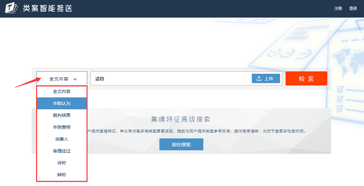
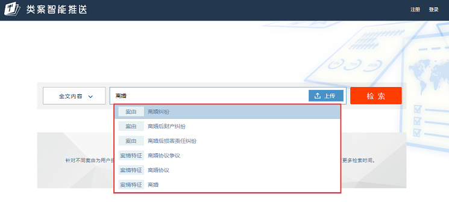
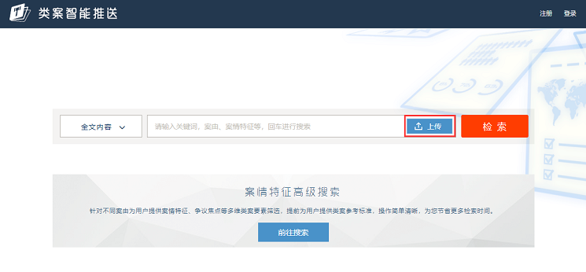
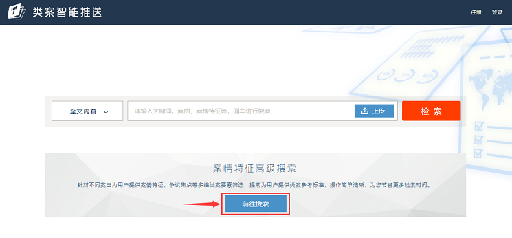
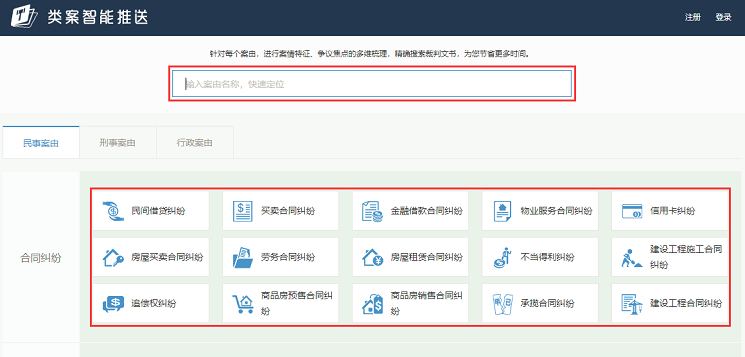
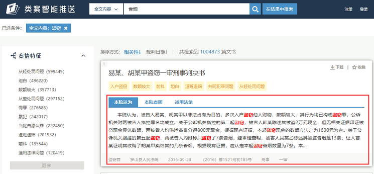
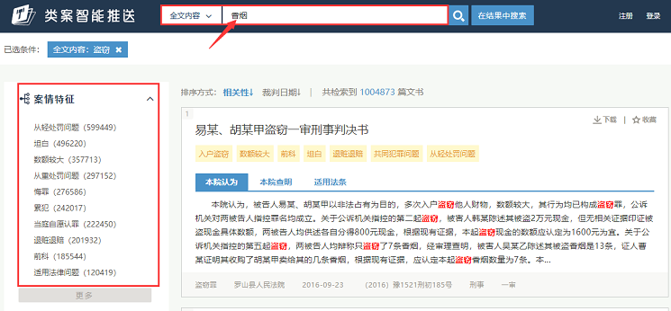
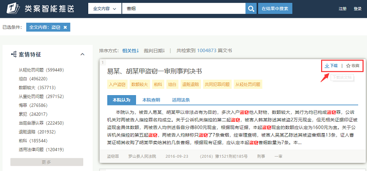
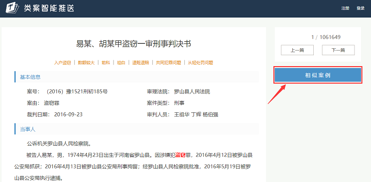
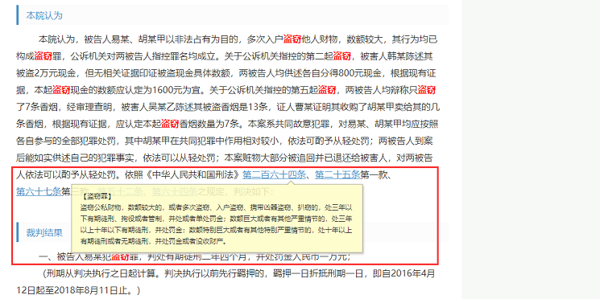

点击搜索输入框左侧下拉，选择想要搜索的区段，即可对文书中该分段内容进行检索。

输入内容后，系统会进行智能联想词汇推送，帮助您最快的找到想要的内容。目前系统支持当事人、法官、律师、案由等多维度联想推荐。

用户可以上传起诉书、裁判文书、审理报告等多种文档进行检索。更方便，更快捷。

案情特征高级检索是针对于每个案由通过大数据语义分析和机器自主学习，进行的案情特征、争议焦点、适用法条等多维度梳理。用户可以根据选择具体的案情特征，快速定位到自己想要的类案。


搜索出的众多文书是否是用户想要的，可以在文书列表内查看某篇文书的本院认为、本院查明、适用法条内容，进而了解文书的摘要信息。

用户想要在结果中缩小搜索范围，可以继续在输入框内输入条件，点击在结果中搜索按钮，或者选择左侧筛选项，即可完成在结果中继续搜索。

用户可以在文书列表、文书全文中点击收藏和下载，收藏、下载的文书记录可在个人中心中查看。

在查看某篇文书全文内容时，想要查看与当前文书相似的案例时，可以点击右侧相似案例按钮，系统将为用户推荐案情特征、争议焦点等最相似的10篇案例。

将鼠标放置在法条条目上，即可查看该法条详细内容。
